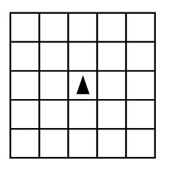

The question below uses a robot in a grid of squares. The robot is represented as a triangle, which is initially in the center square of the grid and facing toward the top of the grid.

The following code segment is used to move the robot within the grid.
- x ← RANDOM (1, 3)
- REPEAT x TIMES
- {
- ROTATE_RIGHT ()
- }
- y ← RANDOM (1, 2)
- REPEAT y TIMES
- {
- MOVE_FORWARD ()
- }
A gray square represents a possible final location of the robot after the code segment is executed. Which of the following represents all possible final locations for the robot?